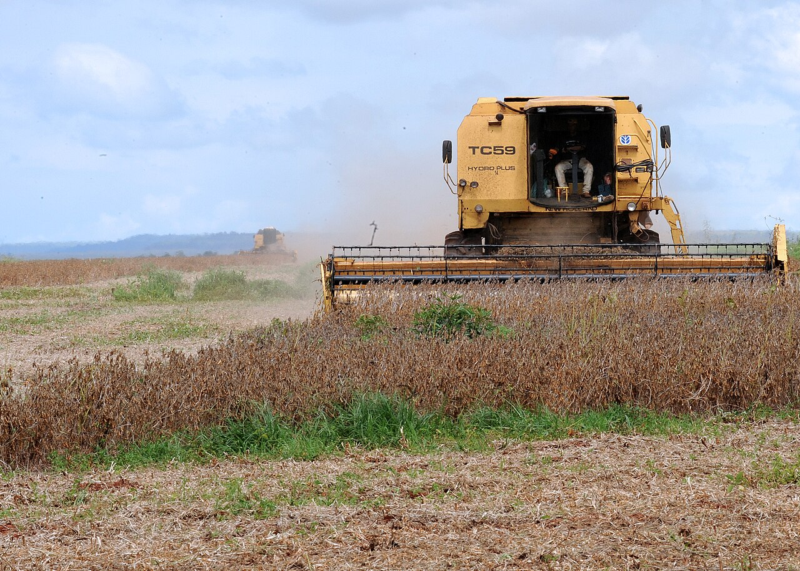

Um choque externo comum
O fim da Guerra Fria, o colapso da URSS e a pressão do Consenso de Washington colocam Brasil e Vietnã diante das mesmas escolhas, ao mesmo tempo.
TCC · Relações Internacionais · FECAP · 2026
Desenvolvimento e inserção internacional após o fim da Guerra Fria: uma análise histórico-comparada de duas trajetórias que partiram da periferia e seguiram caminhos opostos.
Renda per capita: PIB per capita em paridade do poder de compra, em dólares internacionais correntes. Fonte: elaboração própria com dados de Banco Mundial (2026b).
Síntese dos indicadores: Brasil e Vietnã, primeiro ano de cada série e 2023
Fonte: elaboração própria com dados de Banco Mundial (2026a, 2026b), Harvard Growth Lab (2026) e PNUD (2025).
Notas: Em cada bloco, a linha de baixo traz o valor do primeiro ano da série e a variação até o último: × indica quantas vezes o valor aumentou; p.p., a diferença em pontos percentuais. PPP: paridade do poder de compra. Int$: dólar internacional, que compra em cada país o mesmo que um dólar compra nos Estados Unidos. O Gini do Brasil é calculado sobre a renda e o do Vietnã, sobre o consumo (Banco Mundial, 2026a). Como o consumo costuma ser distribuído de forma menos desigual que a renda, a distância entre os dois países fica exagerada.
01A pesquisa
Rascunho: texto do projeto de TCC, em revisão
Como Brasil e Vietnã desenvolveram estratégias distintas de desenvolvimento econômico e inserção internacional a partir do final dos anos 1980, e que resultados essas escolhas produziram entre 1990 e 2023?
O fim da Guerra Fria redefiniu a ordem internacional e os modelos de desenvolvimento adotados por países do Sul Global. Brasil e Vietnã partiram de condições periféricas de desenvolvimento e inserção global, mas seguiram trajetórias claramente divergentes.
A partir das reformas do Đổi Mới (1986), o Vietnã adotou uma estratégia gradualista e pragmática, combinando liberalização controlada, políticas industriais ativas e diplomacia flexível orientada à inserção produtiva global. O Brasil alinhou-se às recomendações do Consenso de Washington, com liberalização financeira acelerada, reprimarização da pauta exportadora e desindustrialização precoce.
A divergência nos resultados de desenvolvimento é explicada, sobretudo, pela diferença nas estratégias de inserção produtiva nas cadeias globais de valor, condicionada por configurações distintas de forças domésticas e de autonomia estatal.
02Recorte temporal
O recorte começa no momento em que um mesmo choque externo atinge os dois países e termina no último ano com dados disponíveis na base.
Rascunho: texto do projeto de TCC, em revisão
O fim da Guerra Fria, o colapso da URSS e a pressão do Consenso de Washington colocam Brasil e Vietnã diante das mesmas escolhas, ao mesmo tempo.
1990 coincide com a abertura econômica acelerada no Brasil (governo Collor) e com a consolidação das reformas do Đổi Mới no Vietnã.
A partir de 1990 as fontes internacionais oferecem séries anuais comparáveis para os dois países. 2023 é o último ano coberto pela coleta.
PIB per capita nominal, exportações e IDH: Brasil e Vietnã, 1990 e 2023
Fonte: elaboração própria com dados de Banco Mundial (2026b) e PNUD (2025). Indicadores: NY.GDP.PCAP.CD; NE.EXP.GNFS.CD; HDI.
Nota: O selo à direita mostra a variação entre 1990 e 2023: × indica quantas vezes o valor aumentou; %, o crescimento percentual.
Marcos de política econômica e de inserção internacional: Brasil e Vietnã, 1986–2023
Fonte: elaboração própria. O marco de 2019 sobre as exportações usa dados de Banco Mundial (2026b), indicador NE.EXP.GNFS.CD.
03Metodologia
A pesquisa investiga como trajetórias nacionais de desenvolvimento são moldadas por processos históricos e por decisões políticas acumuladas ao longo do tempo. Segundo Mahoney e Rueschemeyer (2003), a abordagem se distingue por três características.
Rascunho: texto do projeto de TCC, em revisão
Atenção cuidadosa ao processo temporal e à ordem em que os eventos acontecem.
Análise detalhada de cada país, com rigor comparativo entre eles.
Interesse explícito em explicar resultados históricos significativos.
A comparação segue o desenho de Most Different Systems Design (MDSD). Brasil e Vietnã diferem em praticamente todas as condições estruturais: tamanho, histórico colonial, regime político e população.
Por isso a condição periférica compartilhada em 1990 e a divergência posterior são analiticamente relevantes. Se sistemas tão distintos partem do mesmo ponto e chegam a resultados opostos, o fator explicativo deve ser buscado nas escolhas estratégicas, e não nos condicionantes estruturais fixos.
As conjunturas críticas são os momentos em que várias opções estratégicas estavam disponíveis e em que escolhas distintas produziram trajetórias divergentes.

Fonte: Volpe (2015).
Fonte: NKSTTSSHNVN (2022).
Fontes dos dados da base, por tema
Fonte: elaboração própria. O código de cada indicador e a referência completa de cada fonte estão nos metadados da base e na seção Referências.
04Trajetórias
A narrativa de cada país é organizada em três subperíodos, que correspondem a fases distintas da política econômica e da estrutura produtiva.
Rascunho: texto do projeto de TCC, em revisão

Fonte: Pinheiro (2009).
Financeirização, câmbio apreciado, desindustrialização e reprimarização.

Fonte: Nathan.cima (2022).
Abertura condicionada, investimento estrangeiro produtivo, upgrading e aumento de complexidade.
05Política monetária e fiscal
Os dois temas centrais do debate econômico brasileiro, comparados com as escolhas do Vietnã: as decisões de juros de cada banco central e o resultado das contas públicas, com e sem os juros da dívida. BrasilVietnã
Rascunho: seção nova, dados e textos em revisão
BrasilVietnã
Fonte: elaboração própria com dados de Banco Central do Brasil (2026d) e Vietnã (1999–2023).
Nota: Cada degrau é uma decisão; os pontos marcam as mudanças de taxa. Brasil: meta da taxa Selic definida pelo Copom, a partir de março de 1999. Vietnã: taxa de refinanciamento do State Bank of Vietnam (SBV), com decisões registradas a partir de novembro de 1999. O SBV não tem calendário fixo de reuniões, então só há registro quando a taxa muda. A taxa de refinanciamento é um entre vários instrumentos: o banco também usa tetos de juros de depósito e metas de crescimento do crédito (FMI, 2024; AMRO, 2024). Os blocos abaixo do gráfico contam as decisões no período escolhido.
Decisões de juros do Copom e do State Bank of Vietnam
| País | Decisão | Vigência | Taxa | Variação (p.p.) | Documento |
|---|
Fonte: elaboração própria com dados de Banco Central do Brasil (2026d) e Vietnã (1999–2023).
Nota: Decisão: data em que a taxa foi decidida. Vigência: data a partir da qual passou a valer. Taxa em % ao ano. Variação em pontos percentuais (p.p.) frente à taxa anterior. Documento: reunião do Copom ou número da decisão do SBV. A lista do Vietnã só registra mudanças de taxa.
O resultado nominal é o saldo de todas as receitas e despesas do governo, juros incluídos. O primário exclui os juros da dívida. A distância entre as duas linhas é o custo do serviço da dívida.
Fonte: elaboração própria com dados de FMI (2025). Indicadores: GGXCNL_NGDP (resultado nominal); GGXONLB_NGDP (resultado primário).
Nota: Valores negativos são déficit. A área sombreada entre as duas linhas corresponde aos juros líquidos da dívida (cálculo próprio: resultado primário menos resultado nominal). Conceito de governo geral do FMI, o mesmo para os dois países. Brasil a partir de 2001; Vietnã a partir de 1998. Os números do Brasil diferem dos divulgados pelo Banco Central para o setor público consolidado.
Resultado nominal, resultado primário e juros líquidos da dívida, médias do período: Brasil e Vietnã, 2001–2023 (% do PIB)
Fonte: cálculo próprio com dados de FMI (2025).
Nota: Médias simples dos valores anuais de 2001 a 2023, período em que há dados para os dois países. Valores negativos são déficit.
| Ano | Brasil | Vietnã | ||||||||
|---|---|---|---|---|---|---|---|---|---|---|
| Juros básicos | Inflação | Resultado nominal | Resultado primário | PIB | Juros básicos | Inflação | Resultado nominal | Resultado primário | PIB | |
Fonte: elaboração própria com dados de Banco Central do Brasil (2026c) e Vietnã (1999–2023) (juros básicos), Banco Mundial (2026b) (inflação e PIB) e FMI (2025) (resultado nominal e primário).
Nota: Juros básicos: média anual da taxa Selic (Brasil) e da taxa de refinanciamento (Vietnã), em % ao ano. Inflação: variação anual do índice de preços ao consumidor, em %. Resultado nominal e primário: em % do PIB; valores negativos são déficit. PIB: crescimento real, em % ao ano. Um traço indica ano sem dado: resultado fiscal do Brasil antes de 2001 e do Vietnã antes de 1998; juros e inflação do Vietnã no início da década de 1990. As médias só aparecem quando há dado em todos os anos do período.
Autoridade monetária, autoridade fiscal e marcos legais: Brasil e Vietnã
06Inflação, câmbio e reservas
Os dois picos têm a mesma raiz: crédito crescendo rápido demais, com o câmbio administrado e reservas internacionais curtas. A crise financeira dos Estados Unidos não causou a alta de 2008; ela explica a queda que veio depois. BrasilVietnã
Rascunho: seção nova, dados e textos em revisão
Os dois episódios de inflação alta no Vietnã: causas, papel das reservas e resposta do governo, 2008 e 2011
As reservas subiram de US$ bilhões em 2006 para US$ bilhões em 2007. Esse salto é o retrato da entrada de capital: cada dólar comprado pelo banco central virou dong em circulação.
No segundo semestre de 2008 os preços das commodities caíram, as exportações perderam fôlego e a inflação cedeu (FMI, 2009b). O banco central cortou a taxa cinco vezes entre outubro e dezembro, de 15% para 9,5%, e chegou a 7% em abril de 2009 (Vietnã, 1999–2023).
Para defender o dong, o banco central vendeu dólares: as reservas caíram de US$ bilhões em 2008 para US$ bilhões em 2010. Pela conta do FMI, cobriam 3,8 meses de importações no fim de 2008 e só 1,4 mês no fim de 2010 (FMI, 2012). Sem reservas para sustentar a taxa, vieram quatro desvalorizações entre novembro de 2009 e fevereiro de 2011 (FMI, 2010, 2012). Na maior, em 11 de fevereiro de 2011, a taxa oficial passou de 18.932 para 20.693 dong por dólar, 9,3% a mais. Importados mais caros e a fuga de poupança para dólar e ouro alimentaram a inflação, que chegou a 23% em doze meses em agosto de 2011 (FMI, 2012).
A inflação caiu para % em 2012 e % em 2013, e as reservas voltaram a US$ bilhões já em 2012. Desde então a estabilidade passou a ser a prioridade: a taxa de refinanciamento ficou quase parada de 2014 a 2019 (Vietnã, 1999–2023), e as reservas chegaram a US$ bilhões em 2023.
Fonte: elaboração própria com base nas fontes citadas em cada item. Valores anuais de inflação e de reservas: Banco Mundial (2026b); reservas/PIB: cálculo próprio; resultado nominal: FMI (2025); taxa de refinanciamento: Vietnã (1999–2023).
Nota: Os picos de inflação em doze meses (28,3% e 23%) são mensais e por isso diferem das médias anuais dos blocos de números (inflação do ano frente ao ano anterior).
Regime de câmbio, política monetária e fluxo de capitais: Vietnã e Brasil
| Vietnã | Brasil | |
|---|---|---|
| Regime de câmbio | Administrado. Desde janeiro de 2016 o banco central publica uma taxa central a cada dia (Vietnã, 2015c), e os bancos só podem negociar dentro de uma banda em torno dela, de ±5% desde outubro de 2022 (FMI, 2024). O FMI classifica o regime, na prática, como estabilizado a partir de 2009 (FMI, 2010) e como de ajustes graduais (crawl-like) desde meados de 2023 (FMI, 2024). | Flutuante desde 18 de janeiro de 1999. O mercado define a taxa, e o Banco Central intervém só de forma ocasional, sem meta para o câmbio (Banco Central do Brasil, 1999). |
| Âncora da política monetária | Estabilidade do câmbio. Entre os instrumentos estão os tetos anuais de crescimento do crédito, com uma cota para cada banco (FMI, 2024; AMRO, 2024). A meta de inflação é decidida a cada ano pela Assembleia Nacional (Vietnã, 2010). | Meta de inflação, desde junho de 1999, perseguida com a taxa Selic (Brasil, 1999). |
| Comércio e serviços | Pagamentos de comércio e serviços são livres nos dois países: o Brasil assumiu esse compromisso com o FMI em 1999 (FMI, 1999), e o Vietnã, em 2005 (FMI, 2006). | |
| Fluxo de capitais | Controlado. O investimento estrangeiro direto é incentivado, mas a aplicação em ações e títulos tem de passar por uma conta específica em dong (Vietnã, 2014b), e há limites de participação estrangeira, como os 30% nos bancos (Vietnã, 2014a). | Aberto na prática para aplicações financeiras: não residentes investem em ações e títulos desde 2000 (Conselho Monetário Nacional, 2000). Os controles foram pontuais, como o imposto de até 6% sobre a entrada de capital entre outubro de 2009 e junho de 2013 (Brasil, 2009, 2010, 2013). Uma nova lei cambial vale desde o fim de 2022 (Brasil, 2021b). |
| Dólar e ouro na economia | Uso amplo nos anos 2000. Depois de 2011 o governo passou a desestimular: limitou e, em 2015, zerou os juros dos depósitos em dólar (Vietnã, 2015b), e manteve de 2012 a 2025 o monopólio estatal da produção de barras de ouro (Vietnã, 2012, 2025). | Sem dolarização relevante: a regra geral é que as obrigações a pagar no país sejam estipuladas em reais (Brasil, 2001); as exceções estão listadas na lei cambial (Brasil, 2021b). |
| Reservas em 2008 | US$ bi · % do PIB | US$ bi · % do PIB |
| Reservas em 2011 | US$ bi · % do PIB | US$ bi · % do PIB |
| Reservas em 2023 | US$ bi · % do PIB | US$ bi · % do PIB |
| Inflação em 2008 e 2011 | % e % | % e % |
| Quem absorve um choque externo | As reservas. Com a taxa quase fixa, o banco central vende dólares para segurar o dong; quando as reservas acabam, o ajuste vem em desvalorizações bruscas. | A taxa de câmbio. Na crise de 2008 o dólar foi de R$ 1,56, em agosto, para R$ 2,50, em dezembro (Banco Central do Brasil, 2026b), e as reservas ficaram perto de US$ 200 bilhões (Banco Central do Brasil, 2026a). A inflação importada é combatida com juros. |
Fonte: elaboração própria com base nas fontes citadas em cada célula. Reservas e inflação: Banco Mundial (2026b); reservas/PIB: cálculo próprio.
O Vietnã escolheu câmbio estável e controle de capitais; o Brasil, câmbio flutuante e mercado financeiro aberto ao investidor estrangeiro. Com o câmbio estável, o exportador vietnamita ganha previsibilidade, mas a entrada de dólares vira expansão de moeda e crédito, e a defesa da taxa depende do tamanho das reservas. Foi o que falhou em 2008 e em 2011. No Brasil o câmbio absorve os choques, e o custo aparece em volatilidade e em juros altos para conter a inflação.
Um cuidado com os índices de abertura. O índice Chinn-Ito (Chinn; Ito, 2006), que mede a abertura formal da conta de capital, dá ao Vietnã nota mais alta que a do Brasil desde 2015: −0,17 contra −1,25 em 2023 (Ito; Chinn, 2026). Ele conta as restrições legais que cada país declara ao FMI, não o volume nem a facilidade real dos fluxos. O quadro acima descreve as regras para aplicações financeiras e a prática do câmbio, e não deve ser lida como uma medida única de abertura.
Os meses de importação são do FMI, que usa um conceito de reservas um pouco diferente do da base deste site. O caso Vinashin, o recolhimento compulsório de março de 2008 e as datas das bandas cambiais têm como fonte a imprensa econômica, e não documentos oficiais. A conferência item a item, com o endereço de cada fonte, está em verificacao_cambio_e_inflacao.md.
07Os dados
Os indicadores estão separados em causais (os instrumentos e as condições da política econômica) e de resultados (o que se observa depois). Explore cada série, compare períodos e baixe a base completa. BrasilVietnã
Indicadores da base, por ala e por grupo
Fonte: elaboração própria. A fonte de cada indicador aparece ao selecioná-lo e está no arquivo de metadados.
BrasilVietnã
Quatro variáveis em % num só eixo, por país. O período padrão começa em 1996, quando as quatro séries existem para ambos e a inflação brasileira já está em patamar comparável; amplie para 1990 para ver a hiperinflação (a escala passa a logarítmica automaticamente).
Fonte: elaboração própria com dados de Banco Mundial (2026b) (crescimento do PIB, FBCF e inflação) e de Banco Central do Brasil (2026c) e Vietnã (1999–2023) (taxa básica de juros).
Nota: As cores de cada série estão nos seletores acima do gráfico. FBCF: formação bruta de capital fixo, o investimento em máquinas, equipamentos e construções. Taxa básica: no Brasil, média anual da taxa Selic; no Vietnã, média anual da taxa de refinanciamento, ponderada por dias (1998–1999: aproximação). Inflação do Vietnã indisponível antes de 1996.
| País | 1990 | 1995 | 2000 | 2005 | 2010 | 2015 | 2018 | 2020 | 2022 | 2023 |
|---|
08Notas
09Referências
Fontes citadas nesta página, em ordem alfabética.
Normas seguidas: referências conforme a ABNT NBR 6023:2018; chamadas no texto pelo sistema autor-data da ABNT NBR 10520:2023; gráficos, quadros e figuras identificados conforme a ABNT NBR 14724:2011, com título na parte superior e fonte na inferior; tabelas conforme as Normas de Apresentação Tabular do IBGE.